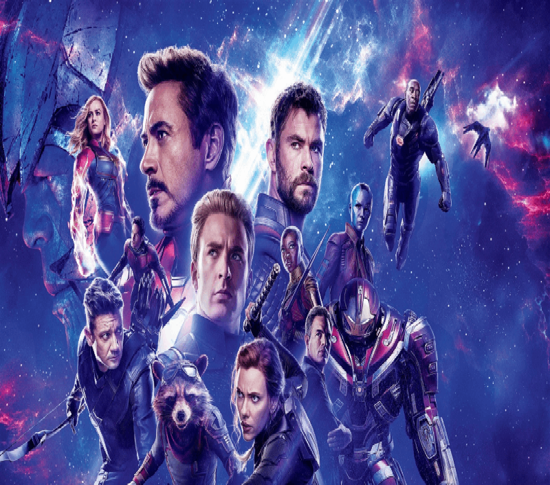

| Đạo diễn: |
Anthony Russo, Joe Russo |
| Diễn viên: |
Robert Downey Jr.,Chris Evans Mark Ruffalo, Chris Hemsworth,Scarlett Johansson, Jeremy Renner,Don Cheadle,
Paul Rudd,Brie Larson,Karen Gillan,Danai Gurira, Bradley Cooper,Josh Brolin. |
| Quốc gia: |
USA |
| Doanh số: |
$2.798 Billion |
| Tóm tắt: |
Bộ phim “Biệt Đội Siêu Anh Hùng: Hồi Kết” xuất sắc phá vỡ nhiều kỷ lục phòng vé và soán ngôi bom tấn thời đại “Avatar” với hơn $2.797 tỉ doanh thu. Được giới phê bình đánh giá 94% điểm tích cực trên Rotten Tomatoes, bộ phim về siêu anh hùng dưới sự dẫn dắt của đạo diễn James Cameron vượt qua thành tích của siêu phẩm kinh điển “Titanic” (2007) do chính ông cầm trịch.
|
